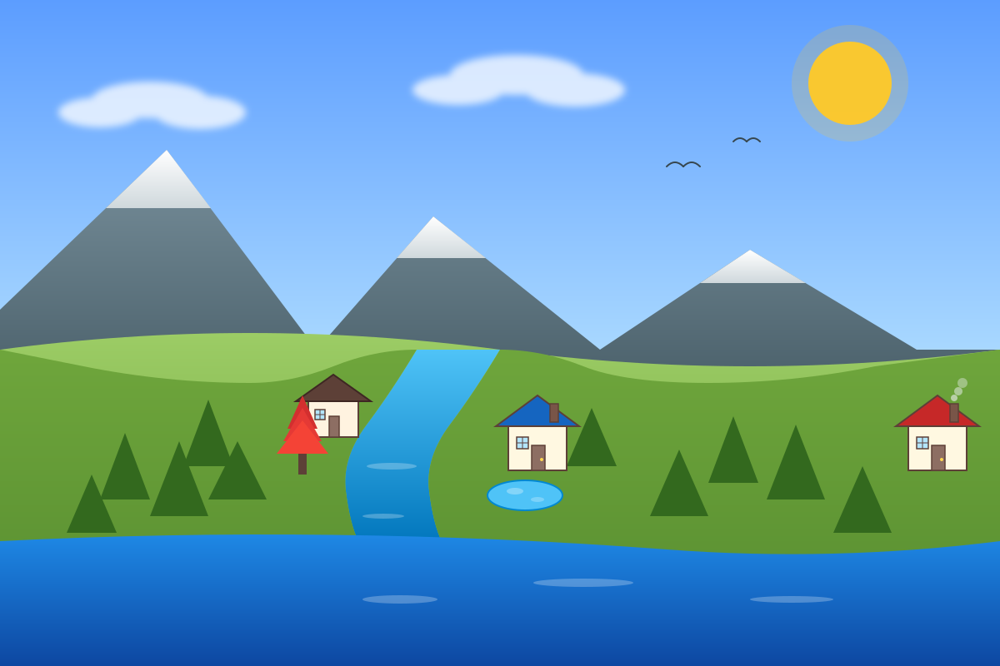
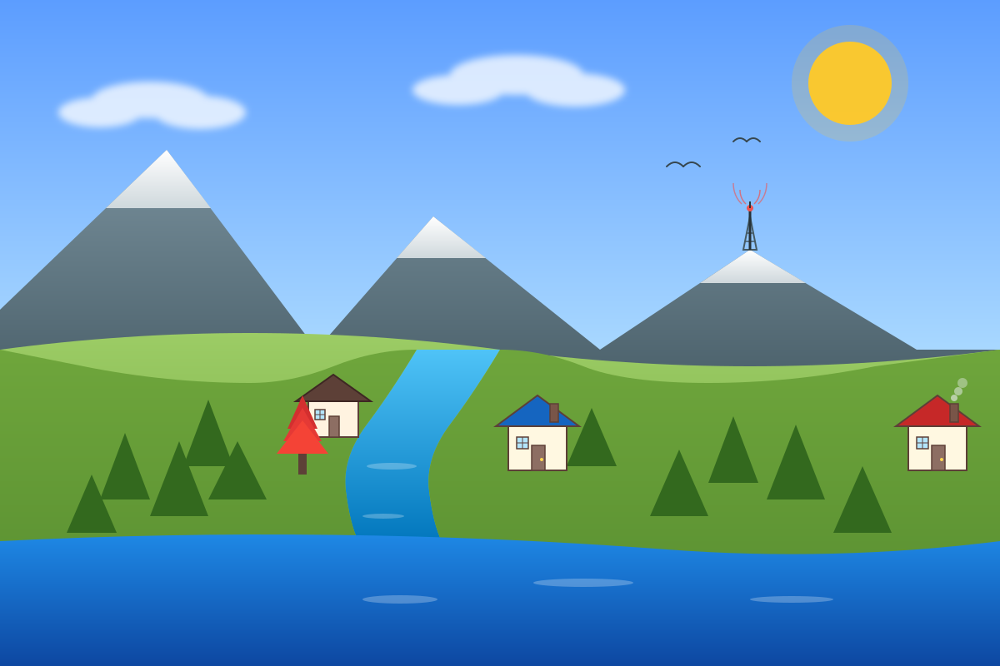

Merge branch 'opposite-house'
46130e9 — Merge branch 'opposite-house'

Add pond
d1cd048 — Add pond

Add antenna tower
e739dfd — Add antenna tower

Add ship on ocean
b5580ac — Add ship on ocean

cherry-pick 後的 main
280e899 — Add ship on ocean